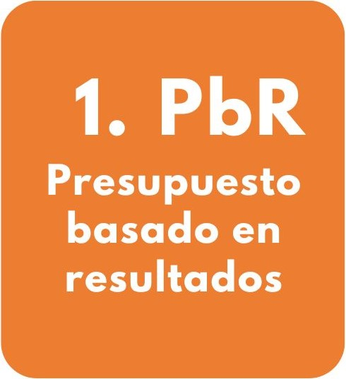
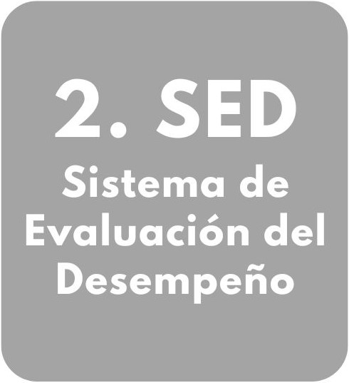
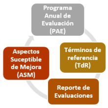
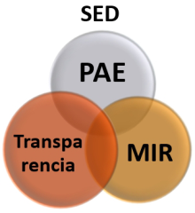

Sistema de Monitoreo y Evaluación del Desempeño de Nayarit
Aquí se presenta al público el Seguimiento, Monitoreo y Evaluación del Desempeño del Gobierno del Estado de Nayarit, el cual se encuentra en el marco de la implementación de la Gestión para Resultados (GpR) de la Administración Pública.
¿Qué es el GpR? (dar clic)
La Gestión para Resultados (GpR) es un modelo administrativo que tiene como fin, optimizar y asegurar la máxima eficacia, eficiencia y efectividad de los recursos públicos y con ello el desempeño gubernamental en la consecución de los objetivos de Gobierno, así como el aprendizaje en la mejora continua de sus instituciones. La GPR cumple con las disposiciones del Art. 134 Constitucional nacional, el cual señalan que los recursos económicos de que dispongan los tres órdenes de gobierno tengan las siguientes condiciones:
- Se administren con eficiencia, eficacia, economía, transparencia y honradez.
- Satisfagan los objetivos a los que estén destinados.
- Sean evaluados sus resultados para propiciar que se asignen cada vez mejor.
La GpR es una herramienta metodológica que vincula el ciclo programático presupuestal que incluye:
Esquema del ciclo programático presupuestal (dar clic)
¿Cómo opera el GpR?
Para su implementación, la GpR incluye dos procesos sustanciales y complementarios denominados:
|  | |
|  |
1. Presupuesto basado en Resultados (PbR)
¿Qué es el Presupuesto basado en Resultados (PbR)? (dar clic)
PbR es una metodología que permite vincular los procesos de toma de decisiones y de asignación de recursos públicos, al logro de resultados con base en el desempeño observado y esperado medido con indicadores, del ejercicio de los recursos presupuestarios y su apego a los objetivos de la planeación. Los indicadores son monitoreados periódicamente.
¿Cómo se hace el Seguimiento y monitoreo de indicadores? (dar clic)
El seguimiento es la supervisión del avance en el cumplimiento de los objetivos y metas de los Programas y Políticas Públicas a través de indicadores. Los indicadores son establecidos en la Puesta en Vigor del Presupuesto en Base a Resultados (PBR) del Presupuesto de Egresos de cada ejercicio fiscal a través de Matrices de Indicadores de Resultados (MIR) y por Programa presupuestal (Pp).
¿Qué son los indicadores? (dar clic)
Los indicadores de desempeño son herramientas que sirven para medir y dar un panorama del logro de objetivos. Las instituciones que operan los Programas presupuestarios (Pp), se encargan de monitorear y reportar continuamente el resultado de estos indicadores. Para ello, aquí se pone a disposición a la ciudadanía el “Sistema Integral de Indicadores de Desempeño (SIID)” del Gobierno del Estado de Nayarit.”
¿Qué es el SIID?(dar clic)
El SIID incluye los avance de metas semaforizadas de los indicadores Estratégico y de Gestión de las Matrices de Indicadores de Resultados (MIR) incluidas en la Puesta en Vigor del PBR del Presupuesto de Egresos del Estado de Nayarit de cada ejercicio fiscal Asimismo el SIID está articulado al Plan Estatal de Desarrollo 2021-2027 con visión estratégica a largo Plazo y este a la vez con los Objetivos de Desarrollo Sostenible de la ONU.
Seguimiento y Monitoreo de indicadores
Puesta en Vigor del Presupuesto Basado en Resultados (PBR)
La Puesta en Vigor del PBR se publica en el Tomo III del Presupuesto de Egresos de cada ejercicio fiscal, donde se oficializan los Programas presupuestales Pp que operan las instituciones gubernamentales y sus Matrices de Indicadores de Resultados (MIR) dar clic:
Indicadores estratégicos
Los Indicadores estratégicos o de impacto incluyen los integrados en el Plan Estatal de Desarrollo 2021-2027, los indicadores de la ODS-ONU, así como del CONEVAL, INEGI, entre otros; alineados a los Programas presupuestales (Pp) de las dependencias y entidades, dar clic:
Sistema Integral de Indicadores de Desempeño (SIID)
El SIID es un sistema de monitoreo que evalúa el desempeño gubernamental midiendo el grado de cumplimiento en forma semaforizada. (verde, amarillo y rojo), de las metas establecidas en las Matrices de Indicadores de Resultados (MIR) de los Programas presupuestales de cada una de las instituciones que conforman la Administración Pública Estatal (APE). dar clic:
- SIID .- Grado de cumplimiento de metas de indicadores
- Instructivo Metodológico (Descargar PDF)
- Acceso al Sistema (Para Usuarios Registrados)
Lineamientos específicos PBR
Los indicadores y su seguimiento se apegan a los lineamientos que aquí se incluyen dar clic:
2. Sistema de Evaluación del Desempeño (SED)
¿Qué es el Sistema de Evaluación del Desempeño (SED)?
El Sistema de Evaluación del Desempeño (SED) es el conjunto de elementos metodológicos utilizados para analizar los objetivos de los Programas y Políticas Públicas, medir sus avances, evaluar desde su diseño hasta sus resultados y mejorar su implementación.
¿Cuál es el proceso del SED?
La esencia del SED es Evaluar para la mejora continua, siguiendo el ciclo de procedimientos siguiente:
Asimismo, el vínculo fundamental entre el Seguimiento y Monitoreo con el SED son las Matrices de Indicadores de Resultados (MIR) ya que las evaluaciones deben de realizarse con base a indicadores:
Programa Anual de Evaluación (PAE)
En el PAE se establecen las evaluaciones a los Programas presupuestales (Pp) estatales que se ejecutarán por ejercicio fiscal, dar clic:
Modelos de Términos de Referencia (TdR)
Los TdR son los criterios técnicos que deben cumplir las evaluaciones de acuerdo a su tipo, dar clic:
Reportes de Evaluaciones
Aquí se presentan los reportes de evaluación de los Programas presupuestales (Pp) elaborados por entes externos a la administración pública estatal y la información contextual importante, dar clic:
Aspectos susceptibles de Mejora (ASM)
Los ASM son los hallazgos, debilidades, oportunidades y amenazas identificadas en las evaluaciones externa y/o informes, a ser atendidos para la mejora de los Programa presupuestales (Pp) y de las políticas públicas. Aquí se presentan los ASM y su seguimiento por parte de las instituciones evaluadas. dar clic:
- Mecanismos de Seguimiento de ASM
- Formatos Seguimiento ASM
- Administraciones anteriores
- 2021
- 2022
- 2023